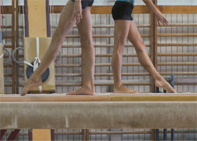

Giant

Salla Tykkä – Finland 2014 – 13 min.
E: Salla Tykkä – DOP: Samuli Saastamoinen – SD: Janne Jankeri – P: Misha Jaari
HD – no dialogue
Canon Tiger Award, IFF Rotterdam
"Giant" features leading junior team gymnasts of Romania. The film is shot in two boarding schools for artistic gymnastics in Onesti and Deva. A soundtrack of interviews with the gymnasts accompanies images of them training and of empty gymnasiums. Archive film footage starting from 1970s and clips from a feature fiction film shot in the same locations reveal not only a continuity in picturing this sport but also the structures of recording it. – Salla Tykkä
Monday 13/10 8:30 p.m. Werkstattkino
Salla Tykkä, born in 1973 in Finland. She graduated from the Academy of Fine Arts in Helsinki. Since 1996, she has worked with photography, video and film.
Films (selection): Pure Hate 1996, – My Hate Is Useless 1996 – Power 1999 – Lasso 2000 – Thriller 2001 – Zoo 2006 – Victoria 2008 – Airs Above the Ground 2010 – Equestrian 2012 – Giant 2014